Experiment 3 - Generative Methods: L-system Snake
Imitate
I wanted to explore L-systems, some light googling brought me to some simple L-System example code, linked at the bottom of the page, by Greg Gelong. It creates a simple L-system in a feather-like shape.
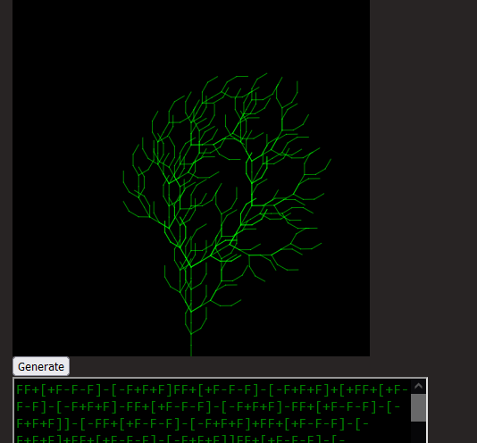I used this code as a jumping off point to mess around with L-Systems and figure out what to do
Integrate
I had recently rewatched a movie called the Secret of Kells. In it, there's this huge, geometric snake monster named Crom Cruach. I thought it would make for a really cool experiment to try and immitate it's form.
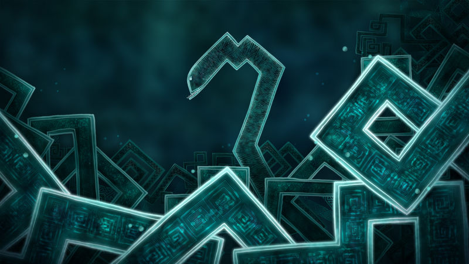I started by just experimented with the L-System, I altered it in such a way that each generation would make a more complete circle.
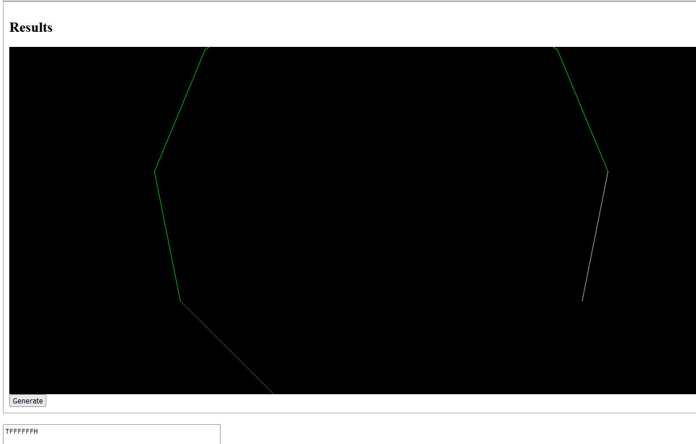Crom Cruach wasn't going to end as a circle, but I did want to make sure my L-System didn't branch out, and instead made one long continous snake
I also wanted to make the space I was working in look nicer, so I used Chat GPT to quickly make a perlin noise generator for the background colors that appear behing Crom Cruach
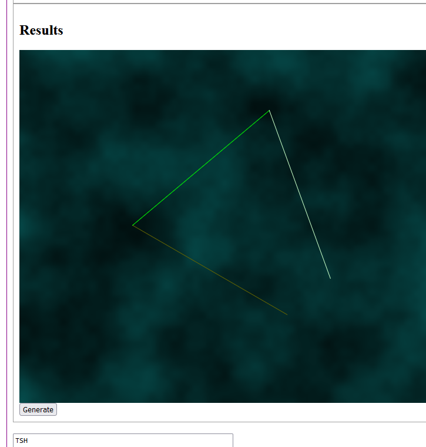However, fixing every pixel was making the load time excrutiatingly long, so I expediated it by only changing color every few pixels
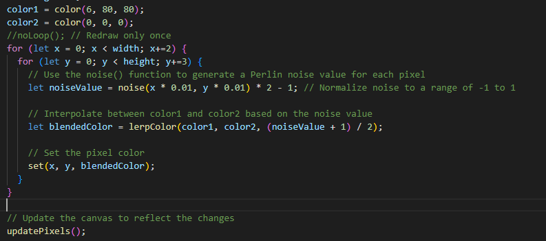I then messed with the L-System to extend and squiggle the snake across the screen.
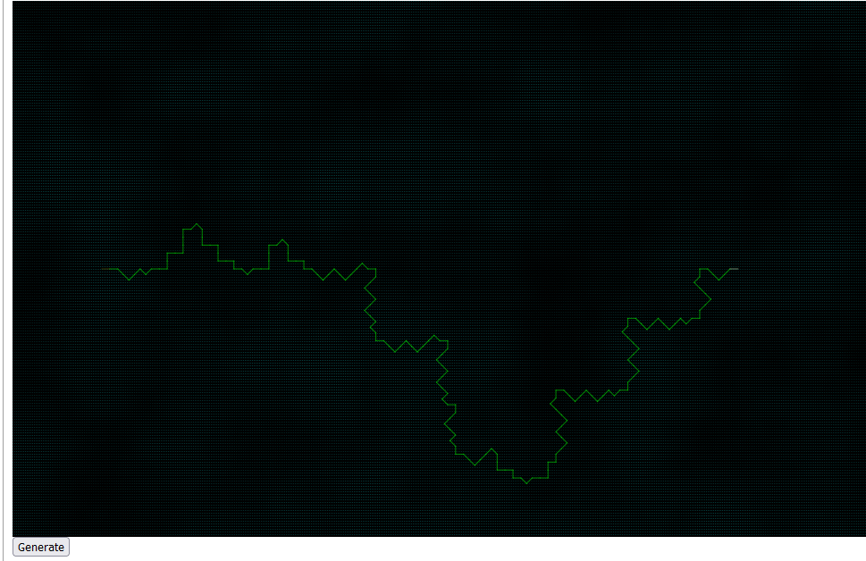Innovate
first I started trying to get a twisting pattern to emerge from the snake. I added a distinct looping pattern (L), and a wiggle pattern (K). To make it look more natural, I also implimented some slight random variation. Although, I made the rotations only turn at 45 degree angles.
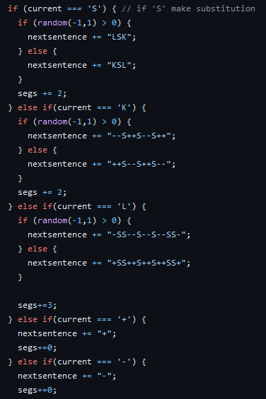 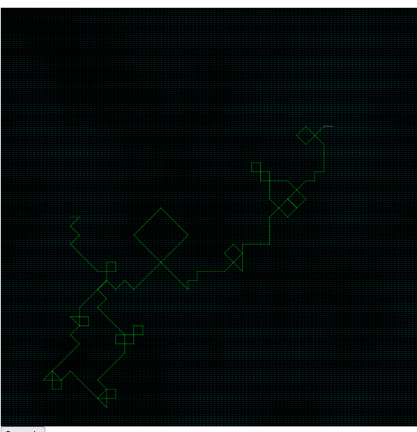This was getting better, but there were some patterns I was noticing that I didn't like; Namely, there were many times where a turn would form an acute angle, or completely turn around on itself. This made it look a lot less natural, and is something I noted Crom Cruach in the movie never does
I decided I needed some better sentence structure for the L-System. I found that a big problem was that some of the character replacements I had ended/started with a rotation. this could cause the rotations to stack next to eachother. I simply made sure that any rotations had line segments around them, this let me control how many rotations can happen before the system draws another line segment.
The twisting was also causing the snake to shrivel, and not extend very far. This is because the snake was always the same total length, so the twisting shortened how far it stretched out to
I compensated for snake length by extending segments that were heading to the right
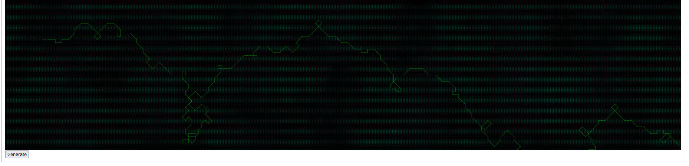 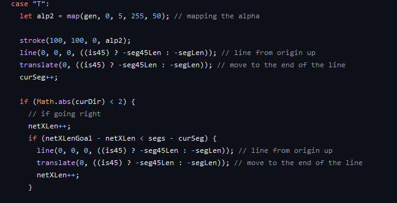This did stretch out the snake, but now it was also overcompensating, and would frequently go way past the edge of the screen.
I managed to adjust the compensation enough by keeping better track of how far to the right of the screen the snake had gotten, and coloring extended segments red
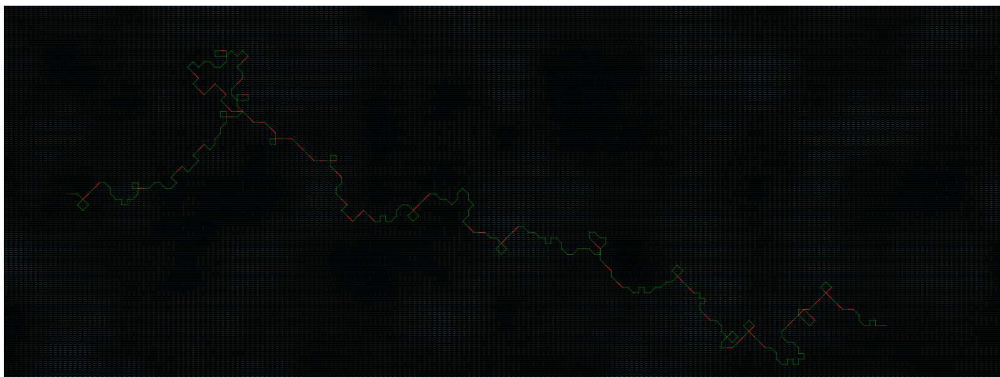This was good, but would often also go off the top or bottom of the screen. This time I made it extend to the center further whenever the snake moved above or below a certain threshold .
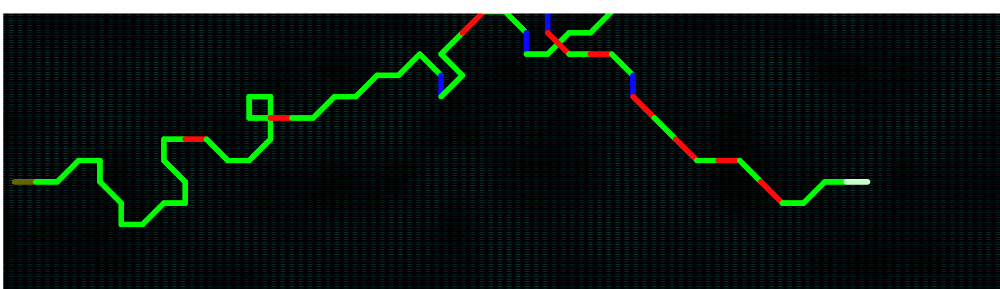It wasn't perfect, but the point was more to make the head and the tail be visible, which it succeeded at doing by the final generation every time
I then made it look more like crom cruach by making 2 lines of differing strokelengths/color on top of eachother each time I drew a line
Reflection
I wanted to make my snake it as close to the crom cruach in the movie as possible. In the end it didn't come out looking quite right, but I'm happy with it none the less. I had never heard about L-Systems before this class, but I really like them. I'm glad I learned how they worked, it was fun to play with their logic
I was really sad that I couldn't get the endless twisting around itself like in the movie, but I when considering implimentation and L-Systems, I just couldn't think of a way to do it that wouldn't make way more work for myself then I could commit to.
I think if I had more time I would also want to figure out how to use quads to draw the snake instead of simple lines, this way I could make it thicker and match up the ends of each segment, which right now don't fully connect. I could also maybe make the head and tail look like a head and tail.
I'm really happy with the variation of the twists I got. At first I was having a hard time figuring out how to adhere to my own rules for how I wanted it to look, but it was a really interesting problem to solve. I had a lot of fun doing it, and seeing it twist in weird ways across the screen was really cool to accomplish.
Results
click the Generate button below to squiggle the snake!!!
go up to max (4) generations for FULL SNAKE